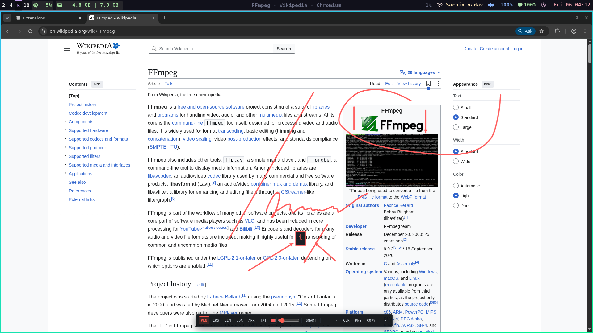

Visual Documentation
Everything you can do with LapDraw — in diagrams, screenshots, and visual examples. Minimal reading, instant clarity.

QuickShape: How Trackpad Hold-to-Snap Works
GitHub PR Review Mode: 3-Step Visual Code Review
Semitransparent highlighter (`HL`) draws clean bands over lines of code without obscuring syntax or line numbers.
Click anywhere to place developer review stamps: `[BUG]`, `[SECURITY]`, `[LGTM]`, `[NIT]`, `[REQ CHANGES]`.
Click `GH-PR` to copy composite screenshot to clipboard + structured PR Markdown review template.
Persistent Documentation & PDF Notebook (N)
Per-URL Local Storage
Notes are automatically tied to the webpage or PDF URL. Revisit any page on MDN, React.dev, or local PDF months later — notes restore automatically!
1-Click Semantic Tags
Insert Markdown tags instantly: + [TODO], + [KEY POINT], + [API REF], + [BUG].
Snapshots & Export
Attach drawing screenshots into notes. 1-click Copy MD or Export .md file for Obsidian, Notion, or Logseq.
# useEffect Reference Notes > Saved: 2026-11-07 14:15 · React Documentation - [ ] [TODO] Audit cleanup functions in DataFeed listener > 🔑 **[KEY POINT]**: Cleanup runs before the effect runs next time and on unmount ### 🔌 API: useEffect(setup, dependencies?) 📸 Snapshot: Attached component lifecycle diagram
Every Tool Illustrated at a Glance
Streamline Pen
Freehand drawing with quadratic spline interpolation. Hold still 450ms to snap geometry.
Highlighter
Translucent yellow/coral highlighter bands for code diffs and documentation text.
Eraser
Smoothly removes vector strokes or masks background drawing.
Straight Line
Draws straight lines. Hold Shift for 45° angle snapping.
Box / Rectangle
Draws architecture containers. Hold Shift for perfect squares.
Connector Arrow
Draws directional message flow arrows with solid filled arrowheads.
Monospace Text
Click-to-type labels, code blocks, and tags in JetBrains Mono font.
Diff Spotlight
Draws a focus box around code diffs, dimming the rest of the page.
Review Stamps
Stamps [LGTM], [BUG], [SECURITY], [NIT] badges with inline comment cards.
Doc Notebook
Per-URL persistent notes drawer with 1-click Markdown export.
Diagram Studio
Generates Sequence flows, UML Classes, and DB Relational Tables.
Radar Minimap
Real-time overview radar in bottom-right corner with click-to-pan.
Architecture & Sequence Studio (D)
alt / else conditions, loop intervals«service», «interface», «entity»<|--), Composition (*--), Dependency (..>)- tokenTTL: Duration = 3600s
+ verifyClaims(raw: string): Claims
8 Developer Themes (THM)
Click any theme to inspect its color palette and terminal aesthetic:
Dark terminal mono rice with coral accents
Classic vampire purple & neon pink
Soothing pastel dark mocha
Clean neon cyberpunk metropolis
Arctic bluish elegance & soft contrast
Vibrant code syntax palette
Clean GitHub white for daylight & printing
Green phosphor hacker glow